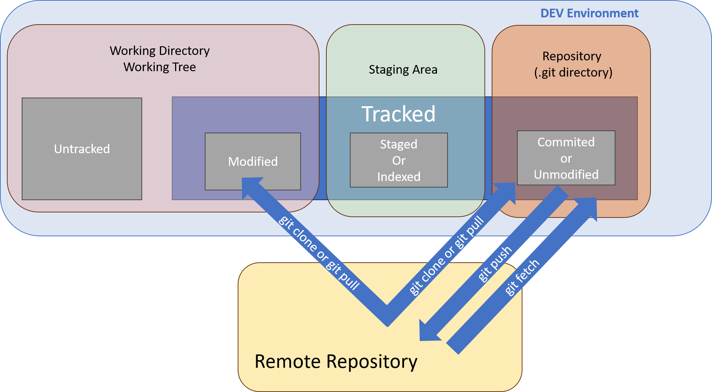

Remotes
SHARE & UPDATE
Retrieving updates from another repository and updating local repos.
Working with remotes in Git involves collaborating with repositories hosted on remote servers.

Viewing Remote Information
To see which remote servers you have configured, run the following command:
git remote -v
Displays the URLs of the remote repositories. It lists the shortnames of each remote handle you’ve specified. If you’ve cloned your repository, you should at least see origin — that is the default name Git gives to the server you cloned from. The -v flag displays the full remote URLs. When you have multiple remotes then you can pull contributions from any of these remotes.
Adding a Remote
Here’s how to add a new remote explicitly.
git remote add <remote-name> <remote-url>
git remote add origin https://github.com/user/repo.git
git fetch origin
Fetching Changes from a Remote
The command goes out to that remote project and pulls down all the data from that remote project that you don’t have yet. After you do this, you should have references to all the branches from that remote, which you can merge in or inspect at any time.
git fetch <remote-name>
git fetch origin
git fetch <remote-name> <branch-name>
git fetch origin main
Pulling Changes from a Remote
git pull <remote-name> <branch-name>
git pull origin main
From Git version 2.27 onward, git pull will give a warning if the pull.rebase variable is not set. Git will keep warning you until you set the variable.
If you want the default behavior of Git (fast-forward if possible, else create a merge commit):
git config --global pull.rebase "false"
git config --global pull.rebase "true"
Pushing Changes to a Remote
When you have your project at a point that you want to share, you have to push it upstream. The command for this is simple.
git push <remote-name> <branch-name>
git push origin main
Pushes local commits to the remote repository. This command works only if you cloned from a server to which you have write access and if nobody has pushed in the meantime. If you and someone else clone at the same time and they push upstream and then you push upstream, your push will rightly be rejected. You’ll have to fetch their work first and incorporate it into yours before you’ll be allowed to push.
Creating a Branch in a Remote Repository
git push <remote-name> <local-branch-name>:<remote-branch-name>
git push origin feature-branch:feature-branch
Cloning a Repository
git clone <remote-url>
git clone https://github.com/user/repo.git
Creates a local copy of a remote repository.
Renaming a Remote
git remote rename <old-name> <new-name>
git remote rename origin upstream
Renames an existing remote.
Removing a Remote
git remote remove <remote-name>
git remote remove origin
Removes a remote from the list of remotes.
Inspecting Remote Branches
git branch -r
Lists remote branches.
The git remote show command is used to display information about a specific remote repository. It provides details such as the URL of the remote repository, the branches it tracks, and additional information about the remote branches.
git remote show <remote-name>
git remote show origin
git remote show <remote-name> typically includes the following information:
-
Remote URL: The URL of the remote repository.
-
Fetch URL: The URL used by
git fetchto fetch from the remote repository. This may differ from the remote URL if the repository supports fetching from a different location. -
Push URL: The URL used by
git pushto push to the remote repository. This may differ from the remote URL if the repository supports pushing to a different location. -
Remote branches: Lists the branches present in the remote repository.
-
Local branch configured for
git pull: Indicates the local branch thatgit pullwill merge into. -
Local refs configured for
git push: Indicates the local branch thatgit pushwill push to. -
Tracking information for each branch: Shows information about the local branch's relationship with the remote branches. This includes the branch name, the remote branch it tracks, whether it is up to date, and the number of commits behind or ahead.
* remote origin
Fetch URL: https://github.com/user/repo.git
Push URL: https://github.com/user/repo.git
HEAD branch: main
Remote branches:
main tracked
feature tracked
Local branch configured for 'git pull':
main merges with remote main
Local refs configured for 'git push':
main pushes to main (up to date)
feature pushes to feature (local out of date)
- The
git remote showcommand is useful for inspecting the configuration and status of a remote repository. - It helps in understanding how local branches are synchronized with remote branches.
- The output provides valuable information for managing and coordinating work with remote repositories.
Using git remote show can provide insights into the state of your remote repository, aiding in decision-making when performing operations such as fetching, pulling, or pushing changes.
Tracking Branches
Checking out a local branch from a remote-tracking branch automatically creates what is called a “tracking branch” (and the branch it tracks is called an “upstream branch”). Tracking branches are local branches that have a direct relationship to a remote branch. If you’re on a tracking branch and type git pull, Git automatically knows which server to fetch from and which branch to merge in.
When you clone a repository, it generally automatically creates a master branch that tracks origin/master. However, you can set up other tracking branches if you wish — ones that track branches on other remotes, or don’t track the master branch.
git checkout -b <branch> <remote>/<branch>
This is a common enough operation that Git provides the --track shorthand:
git checkout --track origin/hotfix
In fact, this is so common that there’s even a shortcut for that shortcut. If the branch name you’re trying to checkout (a) doesn’t exist and (b) exactly matches a name on only one remote, Git will create a tracking branch for you:
git checkout hotfix
git checkout -b htfx origin/hotfix
Now, your local branch htfx will automatically pull from origin/hotfix.
If you already have a local branch and want to set it to a remote branch you just pulled down, or want to change the upstream branch you’re tracking, you can use the -u or --set-upstream-to option to git branch to explicitly set it at any time.
git branch -u origin/hotfix
Upstream shorthand
When you have a tracking branch set up, you can reference its upstream branch with the @{upstream} or @{u} shorthand. So if you’re on the master branch and it’s tracking origin/master, you can say something like git merge @{u} instead of git merge origin/master if you wish.
Updating Remote Branches
git remote update origin --prune
This command updates the local list of remote branches (origin) and prunes (removes) any remote-tracking branches that no longer exist on the remote repository.
git remote update is equivalent to git fetch, but it updates all remote-tracking branches instead of just the default one. --prune ensures that any remote-tracking branches that have been deleted on the remote repository are also deleted locally.
git fetch --prune
This command fetches updates from the remote repository and prunes (removes) any remote-tracking branches that no longer exist on the remote repository. It's similar to git remote update origin --prune, but it only updates the default remote and its branches.
git config remote.origin.prune true
Setting this configuration option makes --prune automatic for git fetch when fetching from the origin remote.
With this configuration, running git fetch will automatically prune stale remote branches from the local copy.
git fetch --all --prune --tags --prune-tags --progress
This command fetches updates from all remotes (--all) and prunes (removes) any remote-tracking branches and tags that no longer exist on their respective remotes. --tags ensures that tags are also fetched. --prune-tags prunes any local tags that no longer exist on the remote. --progress displays progress information during the fetch operation.